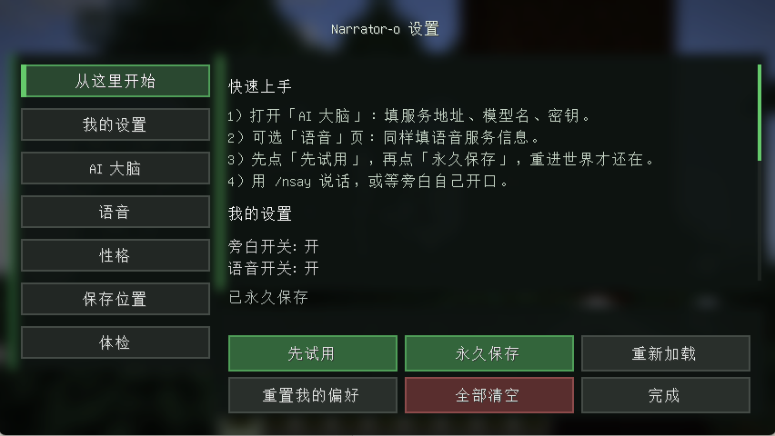
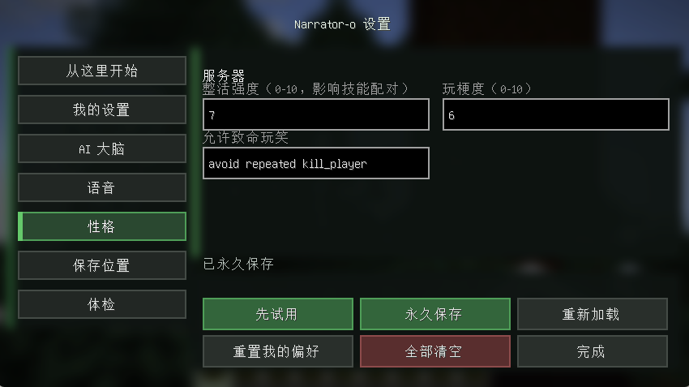
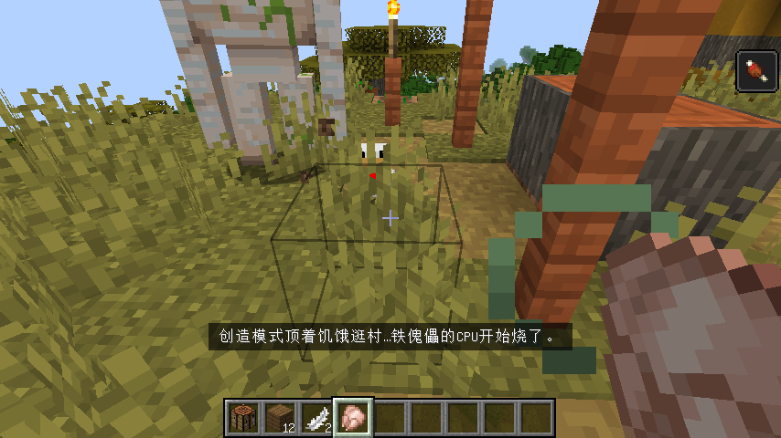
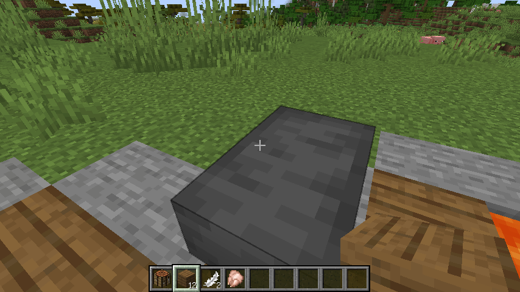
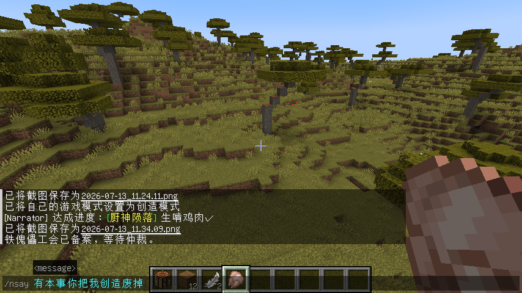
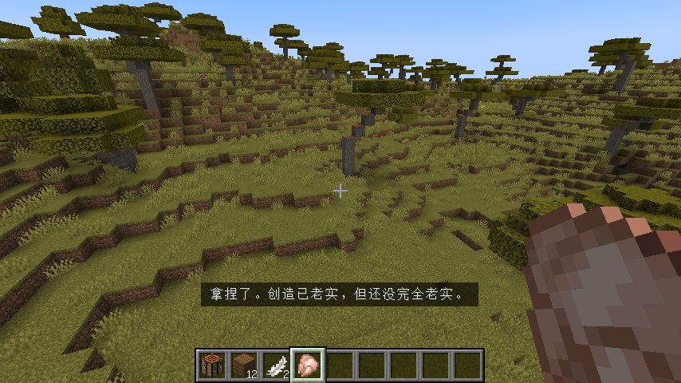

Q01
挖了三小时矿，谁来点评这场灾难？
没有观众时，是否希望有人把「又掉进岩浆」钉在耻辱柱上？
很多 AI 模组只会刷屏。Narrator-o 想解决的是：旁白如何成为玩法，而不是噪音。
没有观众时，是否希望有人把「又掉进岩浆」钉在耻辱柱上？
只说话很安全；能切模式、找群系、砸人一记才像节目效果——如何不卡服？
旁白能否按玩家语言给字幕，同时走稳定的语音通道？
不该。密钥只在服务端；玩家只消费旁白结果。
整活强度能否一旋钮调节，而不是改 Prompt 玄学？
/nsay 应像被点名——立刻转向，而不是背完旧稿。
面向服主与单人档主人。
Minecraft 1.21.1 + NeoForge，放入 narratoro-0.1.0-alpha.jar。AI 调用只在服务端。
游戏内按 ] 打开配置，或：
密钥不回显。改完务必 config save。仅配 LLM 也应能出字幕；配齐 TTS 才有语音。
会打断旧旁白队列，优先响应你。
persona.chaos 0–10：低克制、中约一半吐槽带技能、高更疯。
语音开关、音量、字幕位置/大小；/narratoro player language zh_cn 作语言回退。
周期观察；无聊可沉默。开口靠叙事判断，不是固定 CD。
字幕与语音同包发送；TTS 失败应退回纯字幕。
多技能连戏：音效、假提示、模式、定位传送、召唤等。
查群系/结构后可续轮传送（能力开放，注意安全）。
重活分 tick；卡顿时停当前演出并清理本场实体。
SQLite 记梗；可选联网并有限续写。
默认偏 Medium。调低更冷静，调高更节目效果。
来自当前 Alpha 测试局的实际画面。






技能库能用、能整活，但梗密度还不够。缺什么节目技能、旁白何时不该说话——作者会尽量采纳。